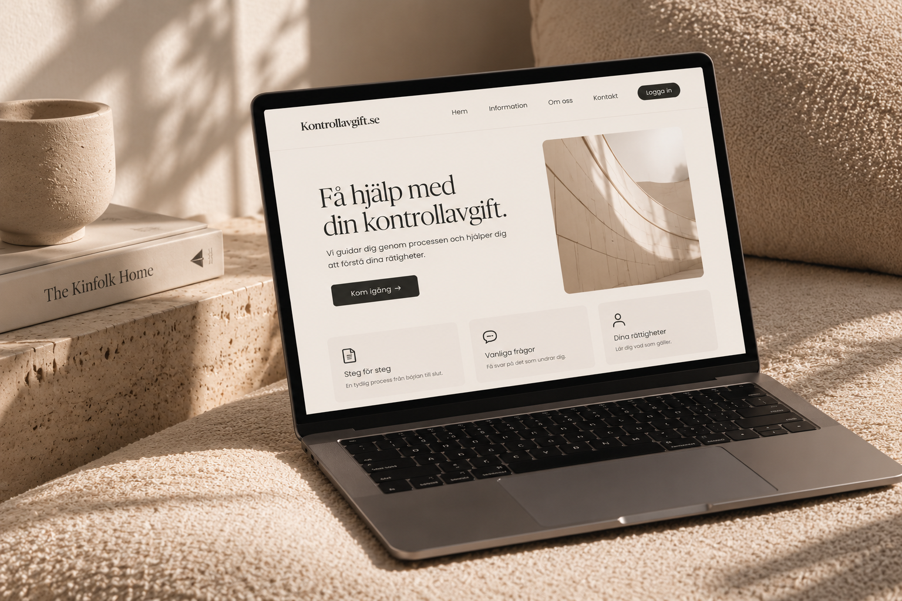

UX/UI · USER RESEARCH
Kontrollavgift.se
Simplifying the experience of finding relevant information about parking fees.

ROLE
UX/UI Designer
METHODS
Double Diamond
Think Aloud
Wireframes
TESTING
8 tests
OVERVIEW
Helping users reach the right information faster.
Kontrollavgift.se helps users understand parking control fees and find information relevant to their situation.
Our focus was improving the user journey and reducing unnecessary questions.
THE CHALLENGE
Reducing unnecessary steps.
Users needed a clearer way to reach information relevant to their situation without answering questions that did not apply to them.
PROCESS
From research to testing.
We used the Double Diamond process to understand the problem, explore ideas and develop the final direction.
I worked with mobile wireframes, UI design and analysis of usability testing.
USABILITY TESTING
Testing with real users.
Eight Think Aloud usability tests were carried out to understand how users moved through the experience.
The results helped identify confusing areas and improve the structure and user flow.
RESULT
A clearer user journey.
The project focused on making the experience more direct by removing irrelevant questions and helping users reach useful information more quickly.
NEXT PROJECT
MindCare →